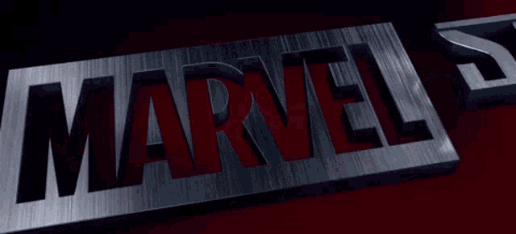
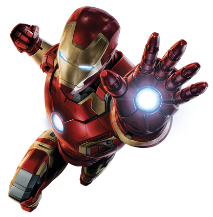
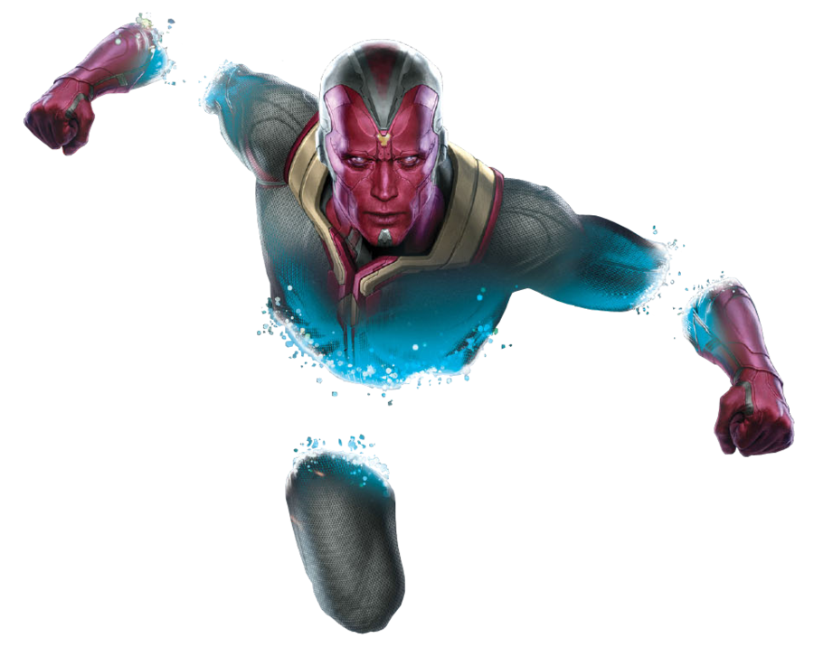
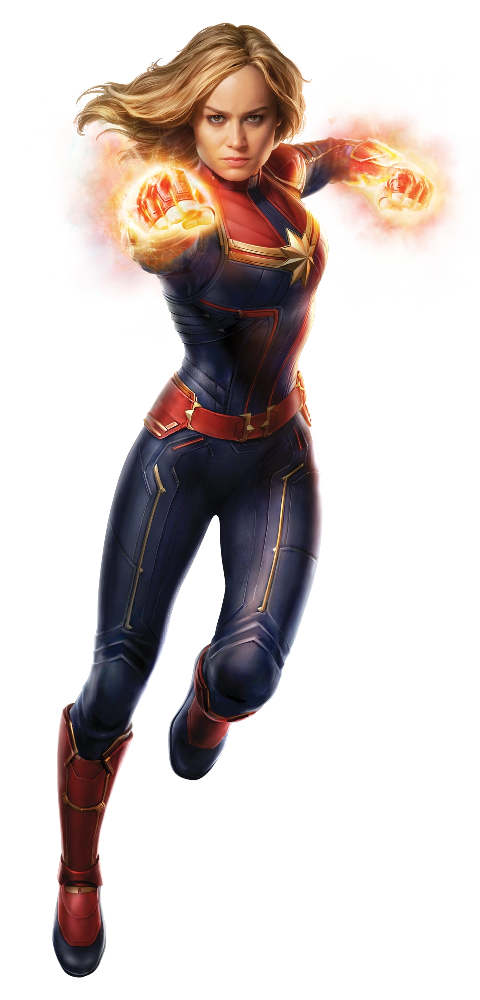
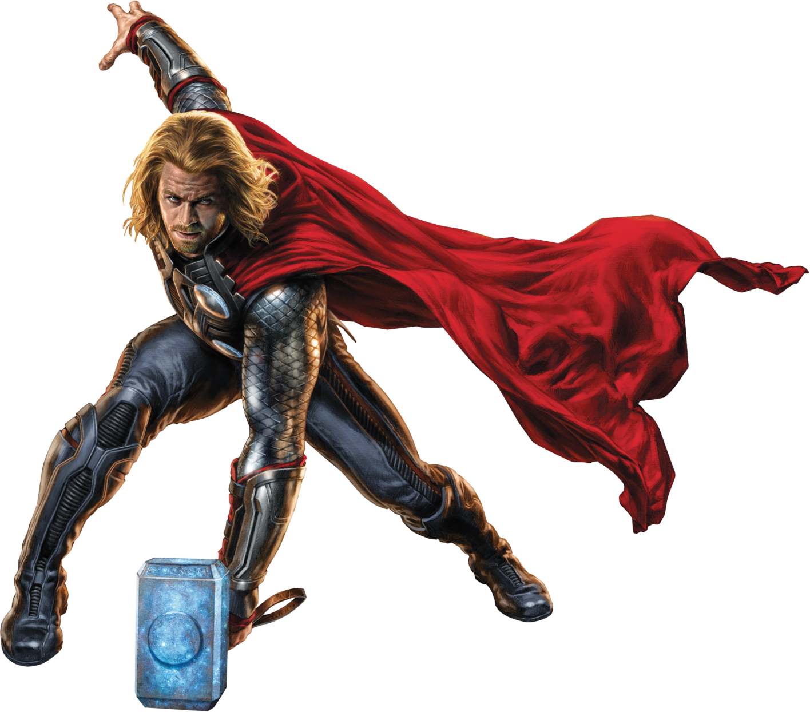

IRON MAN
Gênio, bilionario, playboy e filantropo. O herói mais egocentrico dentre todos os heróis, é o empresário e bilionário Tony Stark, que usa armaduras de alta tecnologia no combate ao crime. Quando ele tinha 21 anos, os pais de Tony foram mortos em um acidente de carro e ele herdou os negócios de seu pai, As Indústrias Stark (Stark Industries). Durante a guerra do Vietnã, o inventor e empresário Tony Stark foi vítima de uma explosão de granada. Stark sobreviveu à explosão mas estilhaços do explosivo se alojaram próximo ao seu coração, ameaçando sua vida. Ele foi capturado e levado até o líder Wong Chu. Restavam apenas alguns dias de vida, mas foi forçado a criar uma poderosa arma. Mas ao invés disso, Tony decidiu criar algo que o mantivesse vivo e permitisse derrotar os captores. Preso com ele estava outro gênio, o professor Ho Yinsen, que o ajudou. Com a criação da armadura, nasceu o herói. Homem de Ferro enfrentou os soldados e os derrotou, salvando também todos os prisioneiros.
Principais habilidades.
- Inteligencia espacial.
- Habilidade Tecnopática.
- Absorção de Energia.
- Armadura: Com poder de fogo.
- Armadura: Combate corpo a corpo.

VISION
Visão é um sintezóide, membro dos Vingadores que apareceu pela primeira vez em The Avengers #57 (outubro de 1968). Depois de aprender como Ultron o criou, usando os padrões cerebrais do então falecido Simon Williams (Magnum), Visão se torna um membro da equipe. Inicialmente, a equipe acredita que o corpo do Visão foi criado a partir do androide Tocha Humana. Logo em seguida, os Vingadores descobrem que o senhor do tempo Immortus usou o poder do Cristal da Eternidade para dividir o androide Tocha Humana em duas entidades - um corpo permaneceu como o Tocha Humana, enquanto Ultron reconstruiu o outro como o Visão.
Principais habilidades.
- Intelecto nível gênio.
- Corpo de Nanites.
- Tecnopatia.
- Intangibilidade.

CAPITÃ MARVEL
Carol Danvers é uma das super-heroínas mais poderosas do mundo dos quadrinhos! Muito antes de ser conhecida como Capitã Marvel, Carol se destacou como Major das Forças Armadas Americana, trabalhando para a CIA e Nasa. Sua vida mudou totalmente após um acidente em uma nave alienígena, fazendo com que o seu DNA fosse alterado, se transformando em uma híbrida de humano e Kree. A partir de então ganhou poderes incríveis! Carol Danvers já assumiu diferentes identidades (além de Capitã Marvel) e participou de várias equipes, como Os Vingadores, X-Men, Supremos, entre outras..
Principais habilidades.
- Explosões Fotônicas.
- Força Sobre-Humana.
- Durabilidade Sobre-Humana.
- Agilidade Sobre-Humana.
- Reflexos Sobre-Humanos.
- Vôo Espacial.
- Transmutação de Matéria.
- Manipulação Regenerativa.
- Envelhecimento Desacelerado.

THOR
Filho de Odin, o deus supremo de Asgard (lar dos deuses nórdicos) e de Jord, a deusa da Terra (também chamada de Midgard ou Gaia), Thor Odinson é o príncipe de um outro mundo existente numa dimensão acima de Midgard, a Terra. Atuando como ativo herói na Terra, Thor Odinson foi um dos fundadores da equipe dos Vingadores ao lado do Homem de Ferro, Homem-Formiga, Vespa e Hulk. Permanecendo na equipe por muitos anos, Thor se envolveu em inúmeras batalhas para defender os seres humanos, sendo mundialmente reconhecido como um herói de grande valor.
Principais habilidades.
- Força Divina.
- Super Resistência.
- Super Velocidade.
- AFator de Cura Acelerado.
- Invulnerabilidade.
- Manipulação de Energia.
- Eletrocinese.